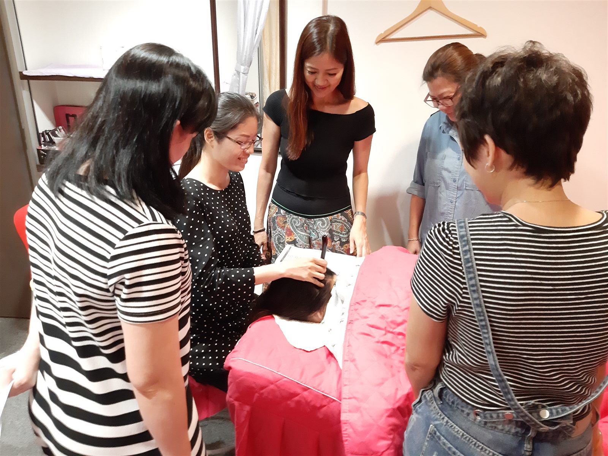

The Bojin Journal · Glow & Circulation
Dull, puffy, tired-looking skin? A gentle full-face bojin sweep for women over 40

If your face looks flat, a little puffy, and somehow tired even on a good day, here's the short answer: your circulation and lymphatic flow slow down while you sleep and slow down a touch more after 40, so fresh blood and drainage don't reach the surface quite the way they used to. None of that means you're doing anything wrong. It just means your skin could use a gentle nudge to wake up, and most of us were never taught how to give it one.
The good news is that you don't need new tools or a twelve-step routine. In about five minutes you can help your whole face look brighter, less puffy, and more awake, using the featherlight touch of the Bojin Method. Let's look at why your complexion goes flat, and then the exact sweep to bring it back to life.
Why does my whole face look dull and puffy?
While you sleep, you lie flat for hours, so fluid that normally drains through the day settles across your face. That's why puffiness is often worst first thing and softens as the morning goes on. A salty dinner, a glass of wine, a short night, or a warm room can all make it more obvious.
Circulation is the other half of the story. As you rest, blood flow to the skin's surface slows right down, so less oxygen-rich blood reaches your face. That's what gives a complexion that flat, slightly grey, "not quite awake" look before you've moved around. Fresh blood at the surface is a big part of what we actually mean by glow.
Then there's time. After 40, both lymphatic drainage and the pace of cell turnover ease off a little, so dull surface cells linger longer and fluid clears more slowly. That combination is why your skincare can suddenly feel like it's sitting on top rather than sinking in. So a tired, flat complexion isn't a flaw. It's just skin that's waiting for a gentle wake-up call.
Why a gentle bojin approach helps
If you already love your gua sha, wonderful. Keep your stone. Gua sha is a beautiful tool, and it's everywhere in the US for good reason. Bojin comes from the same roots. Think of it as the sister technique, the one that focuses on method rather than the tool in your hand.
Here's the thing: waking up a dull complexion is not about pressing hard or "breaking anything up." It's about warmth and movement. Slow, featherlight sweeps encourage fresh blood to the surface and gently guide pooled fluid toward the natural drainage paths down your neck. When gua sha hasn't given you the glow you hoped for, it's almost never because the stone is wrong or because you did it wrong. It's usually because no one showed you how light and how flowing the strokes should be, and to always finish by draining down the neck. That's the method the Bojin approach adds on top of the tool you already have.
Glow comes from movement, not pressure. The goal isn't to scrub or force anything, it's to gently invite fresh circulation up and pooled fluid down, with a touch so light it almost glides on its own. Keep your stone, and add the method.
The gentle 5-minute full-face glow sweep
You can do this with clean fingertips or the flat edge of your gua sha stone. Smooth on a little facial oil or your moisturiser first so everything glides. The whole thing should feel like a soft, calming ritual, never a workout. If you ever feel dragging or pulling on the skin, you're pressing too hard.
- Warm and settle. Rub your palms together for a moment, then rest them gently over your whole face for three slow breaths. This warms the skin, softens the area, and helps you slow down before you begin.
- Wake the cheeks. Using the lightest possible touch, glide outward across each cheek, from beside your nose toward your ear. Featherlight, three or four times per side. You're inviting fresh blood to the surface, not scrubbing.
- Sweep the forehead. Softly stroke upward and outward across your forehead, from the brows toward the hairline, then out toward the temples. Keep it slow and even. This is where a flat, tired look often shows first.
- Lift along the jaw. Glide gently from the centre of your chin out along the jawline toward each ear, then pause lightly at the sides of your face. Light and flowing, never firm.
- Finish down the neck. Sweep softly from just below your ears down the sides of your neck toward your collarbones, several times. This gives everything you just moved a clear path to drain away, and it's the step that makes the difference.
What can I honestly expect?
Done gently and regularly, this sweep can help your face look brighter, less puffy, and more awake, with a bit more of that lit-from-within look, and it tends to help your serums and oils absorb better too. Many women find the biggest win is simply how relaxed and cared-for it feels, a quiet few minutes that set a calmer tone for the day and a small boost of confidence when you catch yourself in the mirror.
Be kind about the results. This is gentle circulation support and a soothing ritual, not a medical detox or a cure for tiredness, and it works best alongside good sleep, water, and a little patience. Dullness or puffiness that's sudden, one-sided, or comes with pain or other changes is worth mentioning to your doctor rather than massaging.
Quick answers
Why does my whole face look dull and puffy in the morning?
Overnight you lie flat for hours, so fluid that normally drains during the day pools in your face, which reads as all-over puffiness first thing. At the same time circulation slows while you rest, so less fresh blood reaches the skin's surface and your complexion can look flat or grey until you get moving. After 40, both fluid drainage and cell turnover slow down a little, so the effect lingers longer. It's normal, not a sign anything is wrong.
Why do my serums and oils seem to just sit on top of my skin?
When circulation is sluggish and dead surface cells build up because turnover has slowed, products have a harder time sinking in and can feel like they're sitting on the surface. A gentle bojin sweep warms the skin and boosts blood flow, which is why so many women find their serums and oils feel like they absorb better right after. It isn't magic, just better conditions for your skincare to work.
Can I use my gua sha stone for this full-face sweep?
Yes. Keep your stone and use its flat edge with a light, gliding touch, or simply use clean fingertips. With bojin the method matters more than the tool: strokes stay featherlight, you always use a little oil or cream so nothing tugs, and every pass ends by sweeping down the neck to drain. It's the technique to add to the tool you already love.
Will this get rid of my dullness or fix how tired I feel?
No, and it's honest to say so. This is a gentle ritual that supports circulation and can help your face look brighter, less puffy, and more awake, while helping your skincare absorb. It isn't a medical detox and won't cure tiredness or replace sleep, water, and time. If dullness or puffiness is sudden, one-sided, painful, or comes with other changes, check with your doctor rather than massaging.
Want the full glow method?
Get the free Bojin guide and learn the featherlight full-face sweep step by step, so your five-minute ritual feels easy and your skin looks brighter and more awake. It's the method to add to the tool you already have.
Watch the free 3-min videoYu-Ting Lan is an international bojin instructor and the founder of Héhé Studio. She has taught her bojin method to close to a thousand students — from complete beginners to grandmothers — across Taiwan, Hong Kong, and Malaysia.